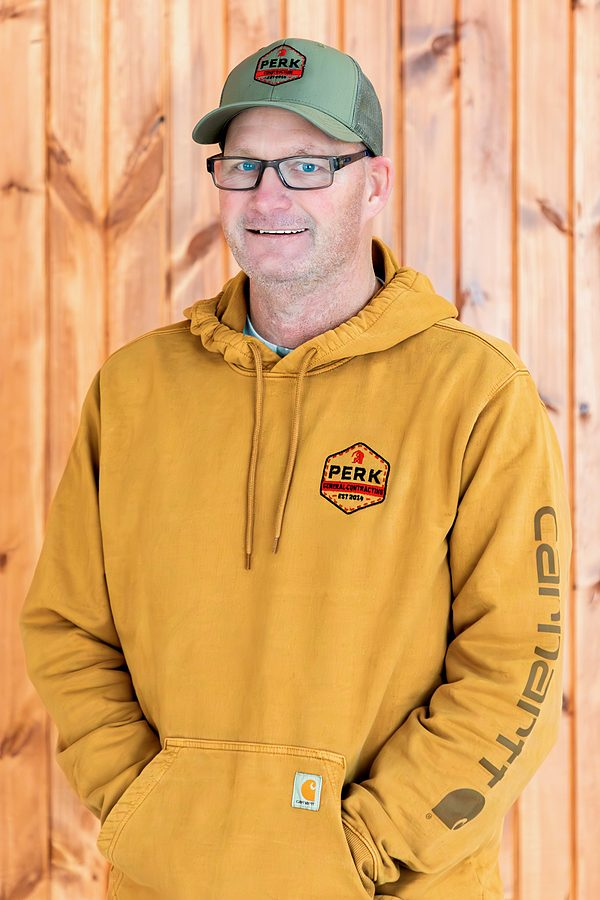
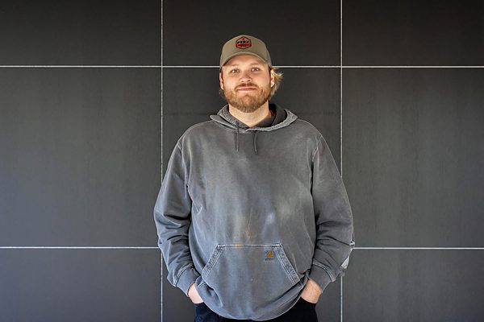
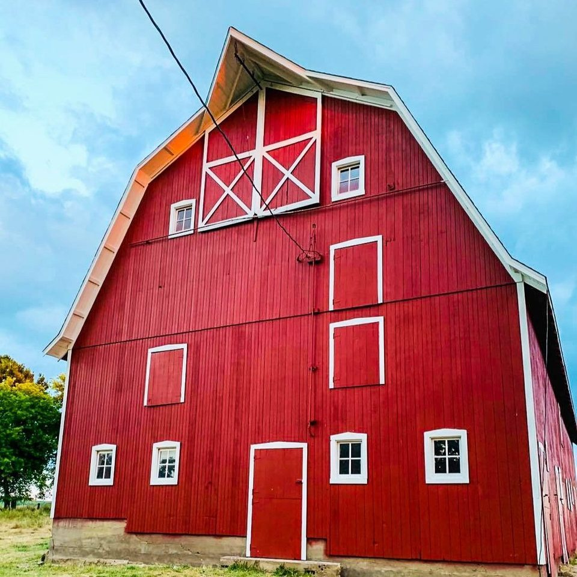

Jim Perkovich
Superintendent
The boss on-site who directs the daily work, coordinates subcontractors, and enforces safety and scheduling.
Our story
Founded in 2014, Perk General Contracting grew from rural-Iowa roots into a full-service builder trusted by homeowners and businesses across the Midwest.

Nikolaus Perkovich
"Once I taught myself the trade of hard work, I excelled at cabinetry and trim. I have a passion for building quality products and developing intentional relationships with customers."
Our roots are in rural Iowa, constructing pole barns — and we quickly grew into new construction, remodeling, carpentry, and even home handyman work. That range means whatever your project needs, there's a good chance we've done it before.
We believe in a strong work ethic with an Iowa-nice attitude — working on projects like we would for friends and neighbors. That's the standard on every job, whether it's a laundry chute in a century-old home or a showroom for a national auto brand.
Meet the team

Superintendent
The boss on-site who directs the daily work, coordinates subcontractors, and enforces safety and scheduling.
Chief Financial Officer
Andre, our chief financial officer, has been around the home building and remodeling process since he was a kid helping his father's construction company. He has been involved with almost all functions and advocates for our clients to fulfill their needs with our operations team. He has owned his own companies as well as holds a bachelor's degree from Simpson College and a master's degree from Southern Utah University. He originates from the south side of Des Moines.
Field & Digital Operations Assistant
Anston runs the digital side of the business — the website, photography, and day-to-day marketing — and lends a hand in the field wherever the crew needs one. Like Andre, he grew up on the south side of Des Moines, and he is currently pursuing a bachelor's degree at the University of Florida.
What we stand for
We pick up the phone, show up when we say we will, and keep you in the loop from start to finish.
The finish work is where it shows. We sweat the trim, the transitions, and the things you'll live with every day.
Built to last, from cabinetry and trim to concrete and roofing — quality products we're proud to put our name on.
Trustworthy, thorough, and fair — we treat your home or business like it's our own.

From the ground up
Starting out building pole barns taught us to work efficiently, solve problems in the field, and finish strong.
Those lessons carry into everything we do today — remodels, additions, custom cabinetry, exteriors, concrete, and full commercial build-outs. And when a project calls for a brand-new custom home, our sister company Willow Crest Homes is ready to build it.
See our workWork with us
Have a project in mind? We'd love to hear about it. Reach out for a free, no-pressure quote.